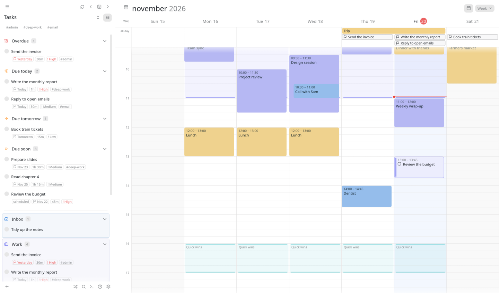
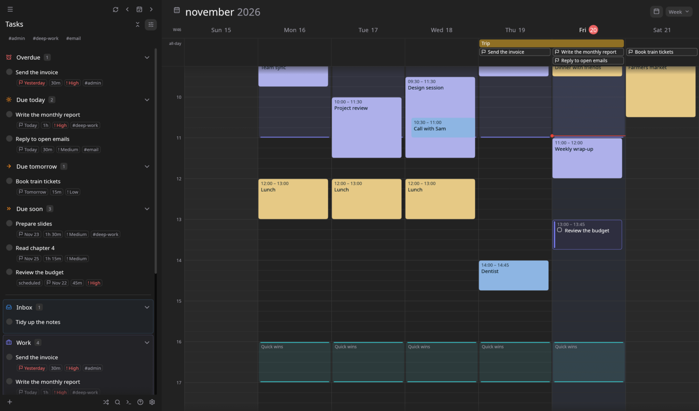
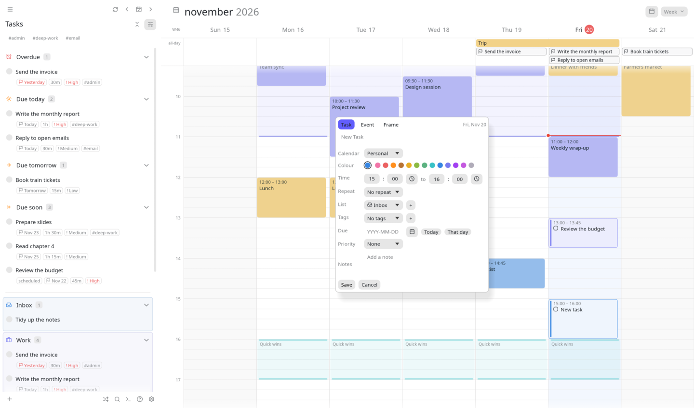
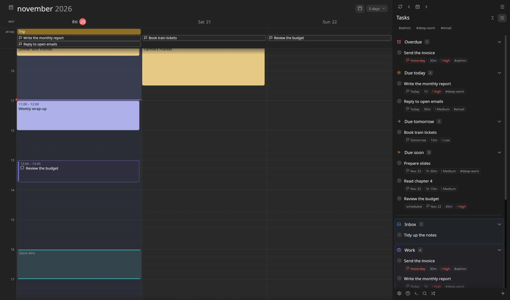
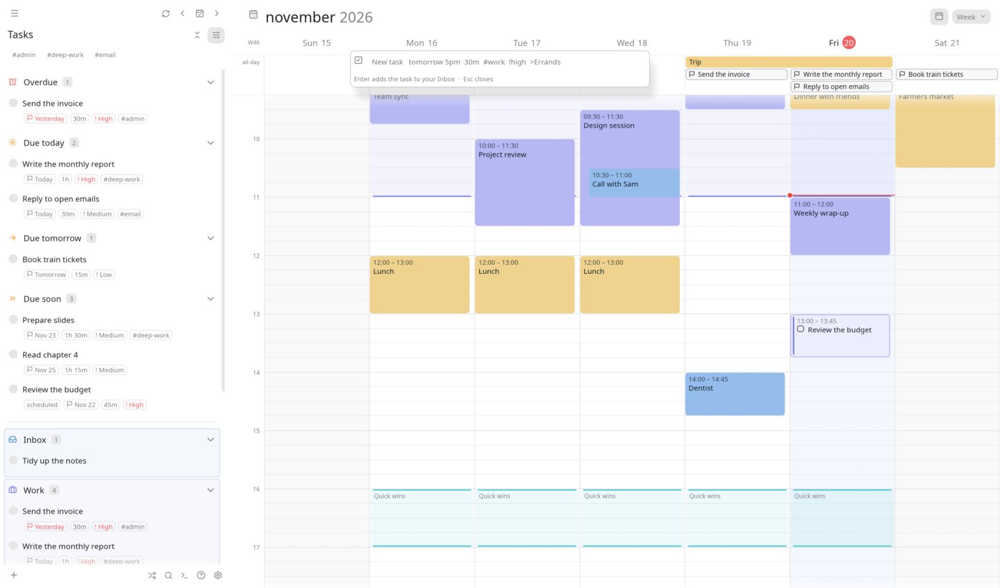
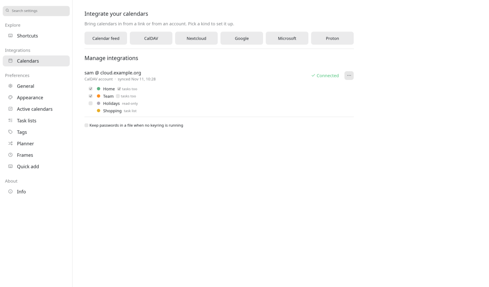

Your calendar and tasks,
in one fast window.
Katlendar is a local-first desktop calendar and task planner. Plan your week, block time for tasks, and sync with the calendars you already use. One app, one data file, no account.
Free and open source (GPL-2.0) · Linux, Windows and macOS


Built for planning your day
Everything stays on your computer. Katlendar only goes online for the calendars you connect, and to see whether a newer version is out.
Every view you need
1–9 days, week, two weeks, month and agenda, with week numbers, a live clock line and zoom.
Direct editing
Click or drag to create events, drag to move, drag an edge to resize. Overlaps sit side by side.
Tasks with lists and tags
An Inbox plus your own lists, tags, priorities, durations, due dates and repeats.
Time blocking
Drag a task onto the calendar to book time for it. Reschedule, follow up or split in one click.
Frames and the planner
Set aside time for kinds of work, like deep work in the morning, and let the planner fit your tasks into it.
Quick entry
Type Write report #deep-work !high 90m .tomorrow and the tags, priority, length and date are filled in.
Sync with what you use
Google, Microsoft 365 / Outlook.com, Nextcloud, CalDAV, Proton, and read-only .ics feeds.
Keyboard first
A command bar (Ctrl+K), search, undo, and a shortcut for everything, each one changeable.
Screenshots
Light and dark themes, a task panel on either side, and a layout that adapts down to a narrow window.




Download
Katlendar is in beta. Get the latest build from the releases page.
Linux
- .deb package Debian, Ubuntu, Mint
- .tar.gz any distribution
x86_64. Passwords are kept in GNOME Keyring or KWallet.
Windows
- .zip Windows 10 and 11
Unzip and run katlendar.exe. SmartScreen may warn about an unknown publisher: choose “More info”, then “Run anyway”.
macOS
- .dmg Apple silicon and Intel
The app is not notarised yet. After moving it to Applications, right-click it and choose Open the first time.
data.json now and then, and please report anything that goes wrong. Katlendar tells you when a newer version is out (you can turn that off under Settings → Info).